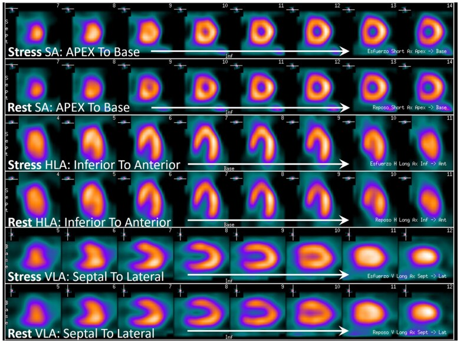
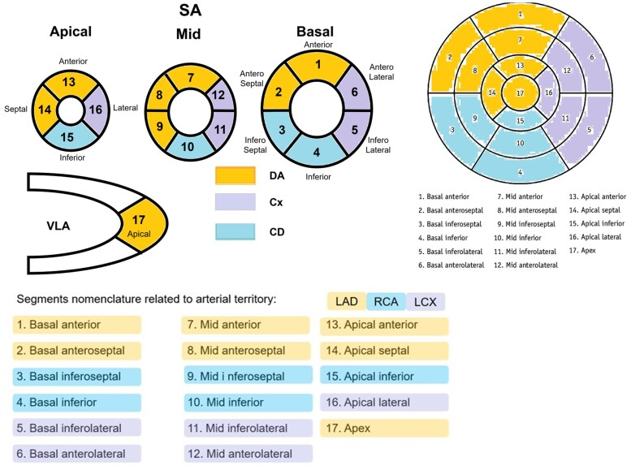
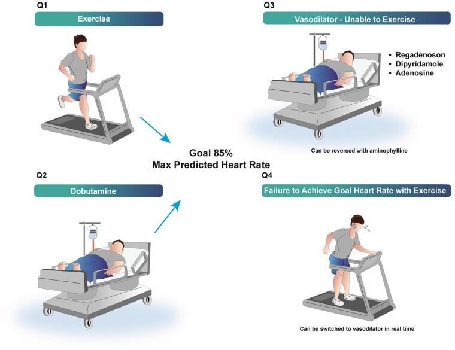
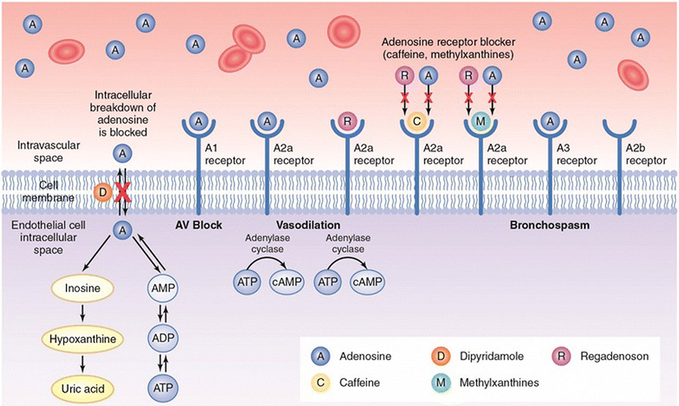
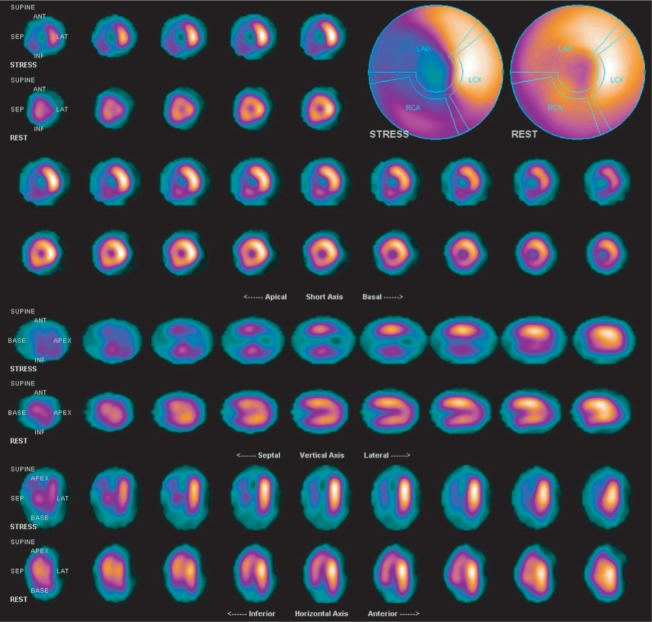
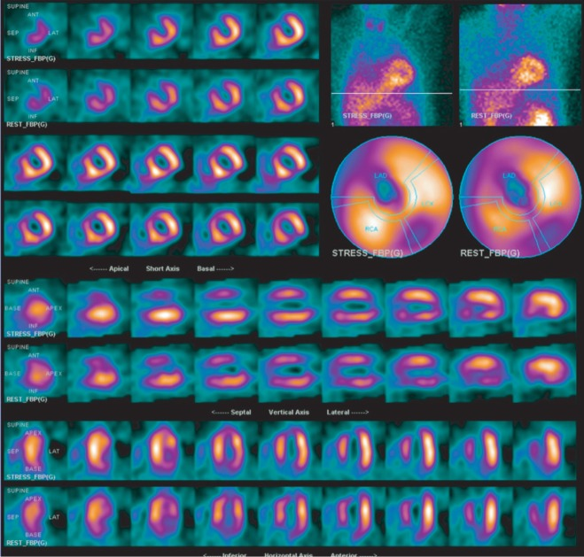
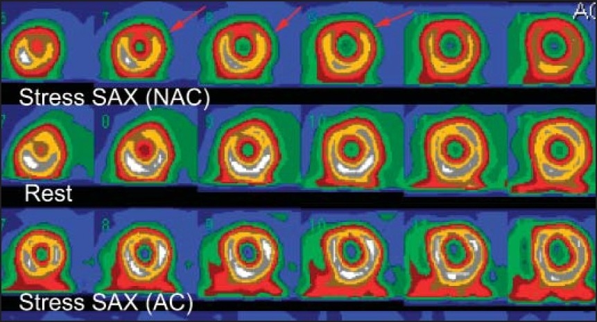
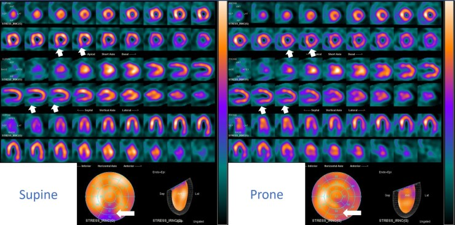
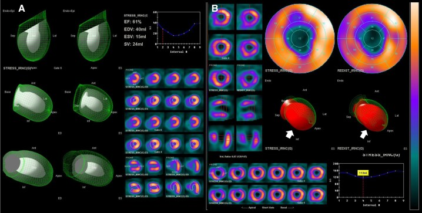

原理 Principle
它到底在量什麼？為什麼這個影像能反映那件事？
灌流示蹤劑要留在心肌細胞裡，必須同時滿足兩件事：有血流把它送到（灌流）、細胞膜與粒線體還在運作（存活）。所以一個「缺損」的意思是血流不夠或細胞死了或兩者——要把這兩件事分開，就得看負荷與休息兩組影像。
為什麼一定要「負荷」
靜止時即使冠脈狹窄達 70%，遠端小動脈也會代償性擴張把血流維持在正常（冠狀動脈血流儲備 coronary flow reserve），所以休息時拍再多張都看不出來。只有把血流推到極限（運動增加需求，或血管擴張劑直接把正常血管撐開 3–4 倍），狹窄遠端因為儲備早就用光而增不上去、正常區卻能大幅增加，兩區之間的落差這時才顯現成影像上的缺損。
這是「相對定量」，不是絕對血流
重建軟體會把整顆左心室裡攝取最高的區域正規化為 100%，其他區域跟它比。這一句話直接推出兩件事：局部病變看得清楚（有正常區當對照），而全面均勻的病變會被抹平（沒有正常區當對照）——後者就是 balanced ischemia 偽陰性的根。

標準顯示順序：short axis（SA／SAX）由 apex → base；horizontal long axis（HLA）由 inferior → anterior；vertical long axis（VLA）由 septal → lateral。負荷通常排在休息上方，但一定要讀標籤，不能只靠位置猜。
17-segment model 與常用冠脈分布：前壁／前間隔多屬 LAD，側壁多屬 LCx，下壁／下間隔多屬 RCA；分界段會因 coronary dominance 與個體解剖而變，不能把彩色邊界當成絕對。兩圖 Source: EACVI Clinical Consensus Statement 2025, Figures 16–17（CC BY-NC 4.0）。兩種示蹤劑的完整對照
| Tl-201（鉈-201） | Tc-99m sestamibi／tetrofosmin | |
|---|---|---|
| 產生方式 | **迴旋加速器（cyclotron）**產製 → 需外購、成本高、供應會斷 | **Mo-99／Tc-99m 產生器（generator）**院內洗提 → 取得容易、便宜 |
| 物理半衰期 | 約 73 小時（≈3 天）（電子捕獲衰變為 Hg-201） | 約 6 小時 |
| 造影用光子能量 | 約 69–81 keV（Hg-201 的特徵 X 光） | 140 keV 單一 gamma 峰 |
| 進入心肌的方式 | 鉀離子類似物，靠 Na-K-ATPase 主動運輸 | 親脂性陽離子被動擴散跨膜，靠膜的負電位滯留在粒線體 |
| 首渡萃取率 | 最高 | 較低：sestamibi 次之、tetrofosmin 最低 → 高血流時低估更明顯（roll-off） |
| 再分布 redistribution | 會：注射後約 10–15 分鐘就開始重新平衡（這就是取像必須在 10–15 分鐘內開始的理由） | 不會：進去就卡住，直到衰變 |
| 要打幾針 | 一針：負荷後立刻取像 → 3–4 小時後拍延遲（再分布）影像 | 兩針：負荷一針、休息一針（同日或分日） |
| 影像品質 | 較差：光子能量低 → 軟組織衰減與散射嚴重；半衰期長 → 可給活度受限、計數少雜訊大 | 較佳：140 keV 穿透好、可給高活度 → 解析度好、gated SPECT 的資料可靠 |
| 輻射劑量 | Tl-201 約為 Tc-99m 的 2–4 倍（記倍率，不記絕對值）；臨界器官腎臟 | 較低；臨界器官：sestamibi ＝上段大腸、tetrofosmin ＝膽囊 |
| 存活心肌評估 | 較強：靠再分布可做 rest-redistribution、24 小時延遲影像、**再注射（reinjection）**揭露冬眠心肌 | 較弱但可用：以休息影像的相對攝取（常用 >50–60%）當存活門檻 |
什麼時候做
寫「決策情境」，不要列疾病清單。
- 當你想回答「這條已知的狹窄，到底有沒有造成缺血」時——解剖已看到中度狹窄，需要功能性證據才敢決定通不通
- 當你想回答「缺血的範圍有多大、落在哪一條血管的領域」時——範圍比嚴重度更決定預後，也決定要處理哪一條
- 當你想回答「這塊不會動的心肌，通了會不會恢復功能」時——固定缺損要進一步分辨疤痕 vs 冬眠心肌
- 當你想回答「這個穩定胸痛病人的風險有多高、能不能先用藥物治療就好」時——驗前機率中等、需要客觀分層
- 當基礎心電圖讓運動心電圖判讀不了（LBBB、心室節律器、預先激動、明顯基礎 ST-T 異常、digoxin 效應），或病人走不動（骨科、神經、周邊血管、體能太差），而你仍需要缺血證據時 → 影像負荷，必要時改藥物負荷
- 當血管重建後症狀復發或惡化，你需要知道是橋血管／支架的問題還是原生血管進展、以及缺血落在哪裡時
什麼時候不要做
其他不該做的情境：高驗前機率 ＋ 典型症狀 ＋ 無法運動或無法解讀非侵入性檢查 → 非侵入性檢查只是拖延，直接走 Cardiac catheterization↗；急性高風險 ACS → 走再灌流與風險分層路徑；任何「再加心臟負荷就會出事」的急性狀態 → 見禁忌節。
怎麼做 / 病人準備
| 項目 | 內容 |
|---|---|
| 兩組影像 | gamma camera 環繞胸部取像，重組為短軸、垂直長軸、水平長軸。負荷影像 ＋ 休息影像一起看才有意義，單看負荷影像無法判讀 |
| 空腹 | 一般禁食 3–4 小時。減少肝膽與腸道活性干擾下壁，並降低運動時嘔吐風險 |
| 咖啡因與茶鹼 | 用血管擴張劑者：所有甲基黃嘌呤（咖啡、茶、可樂、能量飲料、含咖啡因止痛藥、theophylline）至少停 12 小時；口服 dipyridamole 類藥物停 48 小時 |
| 其他藥物 | 運動或 dobutamine 負荷：常需停 beta blocker、CCB、長效硝酸鹽（能不能停由臨床決定）。血管擴張劑負荷不受 beta blocker 影響 |
| 靜脈通路與備品 | 必備靜脈通路；藥物負荷需備急救設備、aminophylline（逆轉血管擴張劑）與 esmolol（逆轉 dobutamine） |
| 取像時機 | Tl-201：負荷後 10–15 分鐘內必須開始（不然就再分布掉了），延遲影像 3–4 小時（必要時 24 小時） Tc-99m：注射後約 15–60 分鐘（依製劑、是否運動、肝膽清除狀況） |
| gated SPECT | 與心電圖同步取像 → 同時得 LVEF、心室容積、室壁運動與增厚。這是分辨衰減假影與真疤痕的關鍵工具，能做就一定要做 |
運動負荷 vs 藥物負荷
改用藥物負荷的時機：走不動，或走得到但達不到目標心率（常用 85% 年齡預測最大心率）；以及 LBBB 或心室節律器。
四種負荷藥物
| 藥物 | 機轉 | 給法 | 主要禁忌 | 重點 |
|---|---|---|---|---|
| Dipyridamole | 抑制腺苷再攝取與代謝 → 內源性 adenosine 累積 → A2A → 正常冠脈擴張 3–4 倍、狹窄遠端增不上去（coronary steal） | 靜脈輸注 約 0.56 mg/kg，4 分鐘（部分方案至 0.84 mg/kg） | 氣喘／反應性呼吸道疾病、高度房室阻斷、病竇症候群、低血壓、未停咖啡因或茶鹼 | 作用時間長 → 副作用拖很久，需 aminophylline 50–250 mg IV 逆轉 |
| Adenosine | 直接作用於 A2A 受體，不必經內源性累積 | 持續輸注 140 mcg/kg/min × 4–6 分鐘 | 同 dipyridamole | 半衰期只有數秒 → 停輸注就改善，通常不必給 aminophylline；常見胸悶、潮紅、呼吸困難、暫時性房室阻斷 |
| Regadenoson | 選擇性 A2A 促效劑（對造成支氣管收縮的 A1／A2B／A3 親和力低） | 0.4 mg 固定劑量 IV bolus，不需按體重算 | 高度房室阻斷、病竇症候群；同樣要停咖啡因與茶鹼；嚴重氣喘仍應審慎——「選擇性」不等於「安全」 | 施打最方便、耐受性較好；會降低癲癇閾值，若發生相關癲癇，不可用 aminophylline 逆轉 |
| Dobutamine | β1 促效 → 心率、收縮力、血壓 ↑ → 增加心肌需氧量（模擬運動，不是擴張血管） | 由 5–10 mcg/kg/min 起，每 3 分鐘遞增至 40 mcg/kg/min；未達目標心率可加 atropine | 不穩定或嚴重心律不整、近期 ACS、未控制的嚴重高血壓、HCM 伴顯著流出道阻塞、Aortic dissection | 明確的致心律不整作用；逆轉用 beta blocker（esmolol）。是氣喘病人的替代方案 |

藥物負荷分成兩路：regadenoson／dipyridamole／adenosine 是 vasodilator stress；dobutamine 是 sympathomimetic stress，要像運動一樣追到約 85% 最大預測心率。Source: EACVI Clinical Consensus Statement 2025, Figure 1（CC BY-NC 4.0）。
血管擴張劑的細節：adenosine／regadenoson 直接作用 A₂A receptor，dipyridamole 阻止 adenosine 細胞內攝取與分解；caffeine／methylxanthines 阻斷 receptor，所以會讓檢查失效。它們放大正常區 flow reserve，狹窄遠端無法同幅增加；dobutamine 則以 β₁ 作用提高心率、收縮力與需氧量。Source: AlJaroudi et al., J Nucl Cardiol 2024, Figure 2（原圖經 ASNC 授權重製）。判讀 Interpretation
① 三種基本型態 —— 上下兩排一對照就分完
| 型態 | 負荷影像 | 休息／延遲影像 | 代表 | 下一步 |
|---|---|---|---|---|
| 可逆缺損（reversible defect） | 缺損 | 回填 | 可誘發缺血，心肌活著 | 依缺血範圍與症狀決定藥物治療 vs 血管重建；見 CAD |
| 固定缺損（fixed defect） | 缺損 | 一樣缺損 | 疤痕／陳舊梗塞——或衰減假影，或冬眠心肌 | 先排除假影（看 gated 室壁運動與增厚）；要問存活就加做延遲／再注射影像或 Cardiac MRI↗ |
| 部分可逆（partial reversibility） | 明顯缺損 | 部分回填 | 疤痕周邊還有存活的缺血心肌 | 常見於陳舊梗塞加殘餘缺血 |
| 反向再分布（reverse redistribution） | 正常或輕度缺損 | 反而更差 | 見下 | 多半不改變處置，但要能認出來、不要誤判為新缺血 |

Reversible defect：STRESS 可見多區低灌流，REST 明顯補回；代表 inducible ischemia。先確認標籤，再逐切面比較同一節段，避免把上下排看反。
Fixed defect：STRESS 與 REST 在同一區持續低灌流；嚴重固定缺損合併 gated wall motion／thickening 異常較支持 scar，但 attenuation artifact 與 hibernating myocardium 仍要排除。兩圖 Source: Chen et al., J Biomed Res 2013, Figures 1–2。② 反向再分布 reverse redistribution
定義：延遲（再分布）影像上的缺損比早期或負荷影像更明顯。
③ 高風險標記：灌流以外的東西
| 標記 | 怎麼看 | 意義 |
|---|---|---|
| TID（transient ischemic dilation，短暫缺血性擴張） | 負荷影像上的左心室腔看起來比休息影像大；異常門檻約 1.2 為界，實務以報告單位自己的參考值為準 | 多支血管或左主幹的嚴重瀰漫性缺血造成瀰漫的心內膜下灌流不足，或負荷後真的心室擴張。是獨立的高風險指標，即使灌流圖看起來「還好」 |
| 肺攝取升高（increased lung uptake） | 肺／心比值升高；在 Tl-201 上最明顯 | 負荷誘發左心室舒張末壓上升 → 肺充血。代表廣泛缺血或左心室功能不良，預後差 |
| 負荷後 EF 下降或新的室壁運動異常 | gated SPECT：負荷後 EF 比休息時低 | 負荷誘發的心肌頓抑 → 嚴重缺血 |
| 右心室清楚顯影 | RV 異常明顯（Tl-201 上較常描述） | 多伴隨肺高壓或嚴重左心室疾病 |
| 缺損跨多支血管領域／範圍大 | 缺損跨越一支以上的分布區 | 範圍比單一部位的嚴重度更決定預後，也更決定血管重建能否改善結果 |
④ 缺損位置對應血管領域
前壁／前間隔／心尖 → LAD；側壁（前側／下側）→ LCx；下壁／下間隔 → RCA（右優勢時）。 下側壁的歸屬會隨冠脈優勢型改變——報告寫「某一節段缺損」時，對應血管是推論而非事實。
⑤ 血管重建後早期的輕微可逆缺損
PCI 後的早期，灌流造影仍可能看到輕微的可逆性缺損——微血管功能尚未恢復、支架處內皮功能異常、原本的頓抑心肌都會造成。這一句話正是「無症狀者不要常規追蹤」成立的原因：術後早期做出來的異常多半沒有臨床意義，只會誤導後手，把人推去做不必要的侵入性檢查（見禁忌表）。
干擾與偽陽性
這一節最常被跳過，也最常害人。
衰減假影 attenuation artifact
| 假影 | 典型位置 | 典型族群 | 怎麼分辨 |
|---|---|---|---|
| 乳房衰減 | 前壁／前間壁的固定缺損 | 女性、乳房體積大、乳房植入物 | ① gated SPECT：假影區的室壁運動與增厚正常；② 缺損位置隨體位與擺位改變；③ **衰減校正（CT-based AC）**後消失 |
| 橫膈衰減 | 下壁的固定缺損 | 男性、肥胖、橫膈上抬 | 同上；俯臥（prone）取像對下壁特別有效——俯臥時橫膈與心臟位置改變，假影會消失而真疤痕不會 |
| 肝臟／腸道活性 | 緊鄰下壁的高活性熱點 | 使用 Tc-99m（經肝膽排泄）、禁食不足 | 延後取像、喝水或牛奶促進肝膽排空；鄰近熱點會拉歪正規化，讓下壁「相對」變暗 |
| LBBB／心室節律器 | 心室間隔的可逆缺損 | 傳導異常或右室起搏者 | 不是衰減假影，是傳導異常造成的間隔舒張期灌流下降，且心率愈快愈明顯 → 用血管擴張劑負荷 |

Breast attenuation：未校正（NAC）的前壁缺損在 attenuation-corrected（AC）影像消失，支持衰減假影而非前壁梗塞。Source: Fathala, Ann Saudi Med 2011, Figure 6（CC BY-NC-SA 3.0）。
Diaphragmatic attenuation：supine 的基底下壁缺損在 prone acquisition 減輕／消失，支持橫膈衰減；若缺損位置隨姿勢移動，也不像固定解剖節段的真疤痕。
Gated SPECT 的關鍵用途：A 顯示灌流與收縮／增厚保留；B 的前壁梗塞則同時出現 perfusion defect、局部運動與 thickening 異常。固定缺損但壁厚與運動正常時，優先懷疑 attenuation artifact。後兩圖 Source: EACVI Clinical Consensus Statement 2025, Figures 21–22（CC BY-NC 4.0）。balanced ischemia：偽陰性的教科書範例
SPECT 靠區域之間的相對比較——軟體把攝取最高的區域正規化為 100%。若三條血管都均勻嚴重狹窄（或嚴重左主幹病變），全心肌的血流儲備一起下降，就沒有一塊正常區可以當對照，影像看起來均勻而「正常」。
怎麼救：看非灌流的線索（TID、肺攝取升高、負荷後 EF 下降、負荷時 ST 下降或血壓不升反降、典型症狀重現）；改用能測絕對心肌血流與血流儲備的 PET；驗前機率高的人不要靠 SPECT 的陰性放心，直接走 Coronary CTA↗ 或 Coronary angiography↗。
其他讓結果失真的因素
| 往哪個方向偏 | 會讓結果失真的因素 |
|---|---|
| 偽陰性 | 未停咖啡因／茶鹼 ＋ 血管擴張劑負荷（腺苷受體被拮抗，血流落差出不來）；運動負荷未達目標心率或提早中止；抗心絞痛藥（beta blocker、硝酸鹽、CCB）未停 ＋ 運動／dobutamine 負荷；balanced ischemia（三支血管或左主幹） |
| 偽陽性 | 乳房、橫膈、肝腸活性（固定缺損被誤讀為疤痕）；LBBB 或心室節律器 ＋ 運動或 dobutamine（間隔假性可逆缺損 → 誤判 LAD）；嚴重左心室肥厚、HCM、糖尿病等瀰漫性微血管病變（陽性但不是你以為的原因）；血管重建後早期的輕微可逆缺損被過度解讀 |
| 整段不可信 | Atrial fibrillation 或頻發早期收縮 → gated 影像的 EF 與室壁運動不可信（R 波觸發不規則） |
與相關檢查的取捨
| 檢查 | 回答什麼 | 優點 | 缺點 | 什麼時候選它 |
|---|---|---|---|---|
| 本篇：SPECT MPI | 「狹窄有沒有造成缺血、範圍多大」——功能性 | 預後資料最豐富；同時得 EF 與室壁運動；能評估存活心肌 | 輻射；相對定量 → 怕 balanced ischemia；衰減假影；空間解析度低 | 中等驗前機率；已知解剖狹窄要判斷意義；要量化缺血範圍以決定血管重建；要評估存活心肌 |
| Coronary CTA↗ | 「哪裡窄、有沒有斑塊」——解剖性 | 對阻塞性狹窄的敏感度與陰性預測值高 → 排除的利器；能看斑塊性質 | 需控制心率與規則心律；顯影劑（腎功能、過敏）；嚴重鈣化 blooming 會高估狹窄 | 低到中等驗前機率、目的是排除冠心症、年輕族群、非典型胸痛 |
| 壓力超音波 | 負荷誘發的節段室壁運動異常 | 無輻射、無顯影劑、床邊可做、同時看瓣膜與結構 | 高度依賴操作者與音窗品質 | 想避輻射（年輕、育齡女性）；同時要評估瓣膜或 HCM；見 Echocardiography |
| Cardiac MRI↗ | 灌流 ＋ 延遲釓增強分辨疤痕的透壁厚度 | 空間解析度最高、無輻射；存活心肌評估的參考標準之一；能一併診斷心肌炎與浸潤性疾病 | 取得性差、耗時、幽閉恐懼、部分裝置限制 | 要精準判斷存活心肌；疑似非缺血性心肌病；SPECT 結果模稜兩可 |
| Coronary angiography↗／Cardiac catheterization↗ | 直接看管腔；可同場做 FFR／iFR 與 PCI↗ | 確定性最高、可同時治療 | 侵入性、血管併發症、顯影劑、輻射 | 高驗前機率 ＋ 典型症狀 ＋ 無法做或無法解讀非侵入性檢查時直接做；急性高風險 ACS |
| PET MPI | 同 SPECT，但能測絕對血流與血流儲備 | 解析度與衰減校正較佳、輻射較低、對 balanced ischemia 較不易漏 | 設備與示蹤劑取得受限、成本高 | 肥胖、乳房大、SPECT 影像品質差；疑似三支血管或微血管疾病 |
| 運動心電圖 Stress test↗ | 有沒有可誘發的 ST 變化 ＋ 運動耐受力 | 便宜、快、預後資訊佳 | 基礎心電圖異常時無法判讀；敏感度與特異度都中等 | 能運動、基礎心電圖可判讀、驗前機率不高時的第一線 |
禁忌與陷阱
相關連結
- 診斷路徑：CAD（驗前機率、什麼樣的缺血值得血管重建）、ACS（急性期不走選擇性影像；MPI 的角色在穩定期與術後有症狀時）、Chest pain↗（主訴層的 can't-miss 與第一批 order）、Dyspnea（缺血可只表現為喘，anginal equivalent）
- 替代或互補的檢查：Coronary CTA↗、Cardiac MRI↗、Echocardiography、Stress test↗、EKG ischemia（基礎心電圖判讀不了正是改影像負荷的理由）、Troponin（壞死 vs 可誘發缺血是兩個問題）
- 影像之後的下一步：Coronary angiography↗、Cardiac catheterization↗、PCI↗、Antiplatelet
- 影響負荷方式與 gated 判讀的共病：Heart failure、HCM、Atrial fibrillation、Cardiac auscultation（嚴重主動脈瓣狹窄是壓力測試的禁忌，先聽出來）
- MPI 陰性排除不掉的：Aortic dissection、Cardiac tamponade